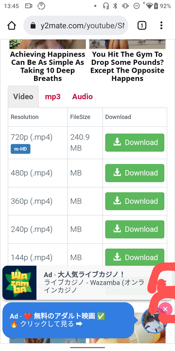

YouTubeの動画をダウンロードする方法
y2mateを使った方法。
まずy2mateへのURLにアクセスします。 次にコピーしたYouTubeの動画URLを にに貼り付ける。 次にいろいろなサイズでダウンロードする画面が出るのでお好みのサイズを選択 ダウンロードボタンが出るのでdownloadボタンを押す。
ダウンロードするのに対し気をつけること
大体のダウンロードサイトで言えること何ですけど このスマホはウィルスに感染しましたなどの偽情報が回っています。 通知を許可しますかなんて出てくるけど、絶対にその画面の指示に従わないこと！！
対処法
通知型の場合
通知表示みたいなポップアップ型の場合
偽ウィルスポップアップ型の場合
偽ウィルス新しいタブ型の場合
ブラウザの戻るボタンを押して元の画面に戻るかまたは閉じてかまいません。※たまにもどうをダブルタップする必要がある場合があります。
何故そんなことをするか
アプリをダウンロードさせたりして広告などで金儲けするため。 通知形は通知を許可すると通知画面に(あなたのスマホはウィルスに感染しました)見たいな通知を出し、 ブラウザ経由で表示させて、不安を煽り偽ウィルス画面に誘導させると言う目的です。 ですが怖がる必要はありません。眺めるだけ、すぐに閉じる。などさえ守れば何もおきません。
もっと安全にYouTubeをダウンロードできないのか
offlibertyを使った方法
まずofflibertyへのURLにアクセスします。 次にコピーしたYouTubeの動画URLを入力ボックスに貼り付ける。 次にOFFを押し待つそうすると黄色いボタンが二つ出てくるので、 ※上が動画ダウンロードボタン、下が音声ダウンロードボタン（音声ダウンロードは少し待つすると一つ黄色いボタンが出るのでそれを押す）
クレイビングエクスプローラーを使った方法
クレイビングエクスプローラーを使うと警告は出てきません。 まずインストールしてない場合はこちらのURLからクレイビングエクスプローラーへのURLダウンロードしてください。 そしたらダウンロードしたexeファイルを開きますするとまず管理者権限を聞かれるので、 はいを押しますそしたらインストーラーが開きますので利用規約をよく読み同意するを押します。 次へを押します。そしたらお勧めのアプリを聞かれます。私の場合はすべてはずしました。 ※はずさないと余計なアプリがはいてしまいます。次へを押します。 そしたらインストール詳細画面が出るのでインストールを押します。 まずコピーした圧縮したい動画のURLをURL入力欄に貼り付ける。 そしたら右上のパズルピースの横のダウンロードアイコンをクリック そして標準画質をクリックする。